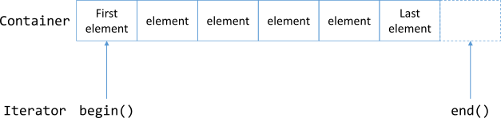

9 STANDARD TEMPLATE LIBRARY
Introduction
The Standard Template Library (STL) contains many templates for useful algorithms and data structures.
The STL is a set of template classes and functions that supply the programmer with
- Containers for storing information
- Iterators for accessing the information stored
- Algorithms for manipulating the content of the containers
9.1 STL Containers
STL Containers
Containers are STL classes that are used to store data. STL supplies two types of container classes:
- Sequential containers
- Associative containers
In addition to these STL also provides classes called Container Adapters that are variants of the same with reduced functionality which support a specific purpose.
Sequential Containers
Sequential Containers
Sequential containers are characterized by a fast insertion time, but are relatively slow in find operations.
vector– Operates like a dynamic array and grows at the end. Think of a vector like a shelf of books to which you can add or remove books on one enddeque– Similar tovectorexcept that it allows for new elements to be inserted or removed at the beginning, toolist– Operates like a doubly-linked list. Think of this like a chain where an object is a link in the chain. You can add or remove links – that is, objects – at any positionforward_list– Similar to alistexcept that it is a singly-linked list of elements that allows you to iterate only in one direction
vector: Inserting Elements at the End
#include <iostream>
#include <vector>
using namespace std;
int main () {
vector <int> vecIntegers;
// Insert sample integers into the vector
vecIntegers.push_back (50);
vecIntegers.push_back (1);
vecIntegers.push_back (987);
vecIntegers.push_back (1001);
cout << "The vector contains ";
cout << vecIntegers.size () << " Elements" << endl;
return 0;
}vector: Removing Elements
#include <iostream>
#include <vector>
using namespace std;
int main () {
vector <int> vecIntegers;
// Insert sample integers into the vector
vecIntegers.push_back (50);
vecIntegers.push_back (1);
vecIntegers.push_back (987);
// Erase one element at the end
vecIntegers.pop_back ();
cout << "The vector contains ";
cout << vecIntegers.size () << " Elements" << endl;
return 0;
}vector: Accessing Elements
Elements in a vector can be accessed using the following methods:
- using the subscript operator
[] - using the member function
at() - or using iterators
vector <int> vecIntegers;
// Insert sample integers into the vector
vecIntegers.push_back (50);
vecIntegers.push_back (1);
vecIntegers.push_back (987);
vecIntegers[2] = 123;Associative Containers
Associative Containers
Associative containers are those that store data in a sorted fashion – akin to a dictionary. This results in slower insertion times, but presents significant advantages when it comes to searching. The associative containers supplied by STL are
set– Stores unique values sorted on insertion in a container featuring logarithmic complexity.unordered_set– Stores unique values sorted on insertion in a container featuring near constant complexity.map– Stores key-value pairs sorted by their unique keys in a container with logarithmic complexityunordered_map– Stores key-value pairs sorted by their unique keys in a container with near constant complexity.multiset– Akin to aset. Additionally, supports the ability to store multiple items having the same value; that is, the value doesn’t need to be unique.unordered_multiset– Akin to aunordered_set. Additionally, supports the ability to store multiple items having the same value; that is, the value doesn’t need to be unique.multimap– Akin to amap. Additionally, supports the ability to store key-value pairs where keys don’t need to be unique.unordered_multimap– Akin to aunordered_map. Additionally, supports the ability to store key-value pairs where keys don’t need to be unique.
Container Adapters
Container Adapters
Container Adapters are variants of sequential and associative containers that have limited functionality and are intended to fulfill a particular purpose. The main adapter classes are:
stack– Stores elements in a LIFO (last-in-first-out) fashion, allowing elements to be inserted (pushed) and removed (popped) at the top.queue– Stores elements in FIFO (first-in-first-out) fashion, allowing the first element to be removed in the order they’re inserted.priority_queue– Stores elements in a sorted order, such that the one whose value is evaluated to be the highest is always first in the queue.
9.2 STL Iterators
STL Iterators
Iterators in STL are template classes that in some ways are a generalization of pointers.
These are template classes that give the programmer a handle by which he can work with and manipulate STL containers and perform operations on them.
Note that operations could as well be STL algorithms that are template functions, Iterators are the bridge that allows these template functions to work with containers, which are template classes, in a consistent and seamless manner.
Iterator Types
| Iterator Type | Description |
|---|---|
| Input | Input iterators of the purest kinds guarantee read access only. |
| Output | Output iterators of the strictest types guarantee write access only. |
| Forward | Can only move forward in a container (uses the ++ operator). |
| Bidirectional | Can move forward or backward in a container (uses the ++ and -- operators). |
| Random-access | Can move forward and backward, and can jump to a specific data element in a container. |
Pointers vs. Iterators
| operator | meaning | pointer | iterator | |
|---|---|---|---|---|
* and -> |
to dereference | yes | yes | |
= |
to assign | yes | yes | |
== and != |
to compare | yes | yes | |
++ |
to move next element | yes | yes | |
-- |
to move previous element | yes | yes | (bidirectional and random-access) |
+ |
to move forward a specific number of elements | yes | yes | |
- |
to move backward a specific number of elements | yes | yes | (bidirectional and random-access) |

Iterator Syntax
To define an iterator, we must know what type of container we will be using it with.
The general format of an iterator definition:
containerType::iterator iteratorName;
containerType::const_iterator iteratorName;
containerType::reverse_iterator iteratorName;where containerType is the STL container type, and iteratorName is the name of the iterator variable that you are defining.
Containter and Iterator
All of the STL containers - have a begin() member function that returns an iterator pointing to the container’s first element. - have a end() member function that returns an iterator pointing to the position after the container’s last element.

9.3 STL Algorithms
STL Algorithms
Idea
Finding, sorting, reversing, and the like are standard programming requirements that should not require the programmer to reinvent implementation to support.
- To use STL algorithms must include the header file
#include <algorithm>This is precisely why STL supplies these functions in the form of STL algorithms that work well with containers using iterators to help the programmer with some of the most common requirements.
STL algorithms can be broadly classified into two types:
- non-mutating algorithms
- mutating algorithms
Non-Mutating Algorithms
- Algorithms that change neither the order nor the contents of a container are called non-mutating algorithms.
find– Helps find a value in a collectionfind_if– Helps find a value in a collection on the basis of a specific user-defined predicate
Mutating Algorithms
- Mutating algorithms are those that change the contents or the order of the sequence they are operating on.
reverse– Reverses a collectionremove_if– Helps remove an item from a collection on the basis of a user-defined predicatetransform– Helps apply a user-defined transformation function to elements in a container
The Interaction Between Containers and Algorithms Using Iterators

Usage of STL Algorithms
Finding elements given a value or a condition
- Given a container such as a
vector, STL algorithmsfind()andfind_if()help you find an element that matches a value or fulfills a condition, respectively. The usage offind()follows this pattern
auto iElementFound = find ( vecIntegers.begin () // Start of range
, vecIntegers.end () // End of range
, NumToFind ); // Element to find
// Check if find succeeded
if ( iElementFound != vecIntegers.end ())
cout << "Result: Value found!" << endl;9.4 Workshop
✒ Quiz
What would be your choice of a container that has to contain an array of objects with insertion possible at the top and at the bottom?
We need to store elements for quick lookup. What container would we choose?
We need to store elements in a
std::setbut still have the storage and lookup criteria altered, based on conditions that are not necessarily the value of the elements. Is this possible?What part of STL helps connect algorithms to containers so that algorithms can work on those elements?
Would you choose to use container
hash_setin an application that needs to be ported to different platforms and built using different C++ compilers?
💻 Exercises
Demonstrate how STL algorithms do
- Counting elements given a value or a condition
- Searching for an element or a range in a collection
- Initializing elements in a container to a specific value
- Initialize elements to a value generated at runtime
- Copy and remove operations
- Sorting and searching in a sorted collection and erasing duplicates